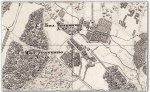
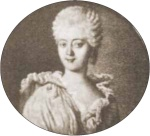
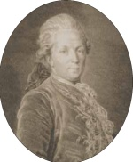
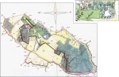
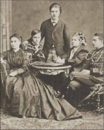
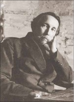
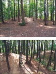

Московский журнал. N2 (290). Февраль 2015
Михаил Коробко
Малое Голубино
Об этой исчезнувшей подмосковной усадьбе и ее владельцах
| 
| Малое Голубино и Большое Голубино на карте 1848 года. Фрагмент
|
Малое Голубино до середины XVII века составляло единое целое с соседним Большим Голубиным, принадлежавшим Воротынским, а затем Измайловым, но, в отличие от него, располагалось на правом берегу в верхнем течении речки Битцы, берущей начало в районе пересечения Новоясеневского проспекта с Профсоюзной улицей. Когда-то эта местность называлась Фролово - по имени владельца, некоего Фрола, документальные сведения о котором до нас не дошли. Позднее Фролово было объединено с расположенным севернее владением Калинино{1} под общим названием Голубино, также имеющим владельческий характер - от имени "Голуба" или его трансформации в "Голубин"{2} (в документах встречается "Голубкино"{3} , но гораздо реже).
В XVI веке Голубино принадлежало князю Василию Семеновичу Мосальскому (?-1577) по прозванию Кольцо, родоначальнику князей Кольцовых-Мосальских. Еще одним известным владельцем являлся Алексей Плещеев{4} . В первой половине XVII века после Смутного времени Голубино перешло к родственнику новой династии Романовых - боярину князю Ивану Алексеевичу Воротынскому (?-1679){5} , участнику Русско-польской войны 1654-1667 годов.
Еще при жизни И.А. Воротынского в середине XVII века Голубино стало собственностью (видимо, путем покупки) стольника Тимофея Васильевича Измайлова{6} . Его, бывшего "у государева дела на казенном дворе у большой казны в суде"{7} , то есть ведавшего финансовыми делами Московского государства, в 1634 году сослали в Казань за вину брата, Артемия Васильевича, казненного вместе с боярином Михаилом Борисовичем Шеиным после возвращения из неудачного похода на Польшу, однако впоследствии простили и вернули ко двору.
В 1653 году Измайлов разделил вотчину между сыновьями: так образовались Большое Голубино, принадлежавшее Александру Тимофеевичу Измайлову (в нем находилась усадьба) и Малое Голубино, числившееся за младшими братьями Александра - стольниками Петром и рано умершим бездетным Михаилом{8} .
Близкое расположение и сходство названий не могло не привести к почти неизбежной в подобных случаях путанице. Так, по мнению историка Д.О. Шеппинга, Малое Голубино от потомков Измайловых досталось роду Салтыковых. Однако, согласно плану генерального межевания, составленному землемером капитаном В.Я. Назимовым 13 мая 1768 года, В.И. Салтыкова владела не Малым, а Большим Голубиным{9} .
В тот же день Назимов составил и план Малого Голубина. Владельцем имения тогда значился обер-секретарь Сената асессор Иван Яковлевич Комаров - в Москве ему принадлежали каменные палаты (современные домовладения 11 и 13 по Малому Кисловскому переулку){10} . Д.О. Шеппинг ошибочно считает владением Комаровых Большое Голубино, якобы числившееся "за Яковом Комаровым, наследниками которого оно в 1777 году продано было доктору медицины барону фон Аш"{11} . Из этого, однако, следует только то, что И.Я. Комаров унаследовал Малое Голубино от отца. На плане показана его усадьба, находившаяся в районе современных домов N11 (корпуса 5, 6) и 13 по проезду Одоевского, и регулярный парк, частично сохранившийся до настоящего времени. Усадьба была очень небольшой, ее три деревянных жилых дома, в том числе господский, компактно располагались вокруг прямоугольного парадного двора. В Малом Голубине существовали две значительные водные системы - обширный копаный пруд на водоразделе (сохранился) и каскад из трех прудов на притоке правого истока Битцы (спущен).
Переход Малого Голубина в 1777 году к фон Ашу выглядит правдоподобно, но в семье баронов врачами и членами медицинской коллегии являлись двое из троих братьев - Петр и Егор Федоровичи{12} .
В 1790-х годах Малое Голубино принадлежало Варваре Ивановне Домашневой, урожденной княжне Оболенской (1764-1828). При ней крестьяне находились на барщине, а женщины занимались домашними рукоделиями{13} ; возможно, был сооружен новый каменный господский дом (на плане 1768 года его еще нет).
| 
| Портрет В.И. Домашневой.
Неизвестный художник. Конец XVIII - начало XIX века
|
| 
| Портрет С.Г. Домашнева.
Офорт А.Я. Колпашникова по оригиналу Ф.С. Рокотова. До 1783 года
|
Муж хозяйки Сергей Герасимович Домашнев (1743-1795), действительный камергер, статский советник, поэт, академик, еще студентом Московского университета печатал стихи и прозу. Далее служил в лейб-гвардии Измайловском полку, участвовал в Русско-турецкой войне 1768-1774 годов, а в 1775-м занял пост директора Академии наук. Его стремление к самовластию вызывало постоянные конфликты с академиками. Еще С.Г. Домашнев прославился "гонениями" на твердый знак, который он собирался упразднить, что дало повод тогдашним острословам составить забавную "челобитную от ера". Также деятельность Сергея Герасимовича осмеяна в сочинении "На бывшего в Академии наук директором господина Домашнева". В 1783 году после жалобы академиков и последовавшей ревизии "гонителя ера" отставили от должности.
С.Г. Домашнев владел усадьбой Молоди в Подольском уезде (1781-1785), находившейся южнее Малого Голубина.
Перед Отечественной войной 1812 года Малое Голубино принадлежало майору 1-го егерского (ополченского) полка Ивану Ивановичу Росту (?-1840). Отсюда И.И. Рост выставил в ополчение всего одного ратника. Это позволяет предположить, что в сельце проживало не более десятка мужчин, поскольку московские дворяне постановили мобилизовать каждого десятого из своих крепостных{14} . Наполеоновские войска, отступавшие по Старой Калужской дороге, побывали в Малом Голубине и ограбили его, как и другие окрестные усадьбы. Враг, в частности, сжег соседнюю деревню Верхние Теплые Станы, тогда принадлежавшую коллежскому асессору И.Н. Тютчеву - отцу будущего поэта (ранее деревней владела печально известная "Салтычиха" - Д.Н. Салтыкова).
Самого И.И. Роста дворянство Московского уезда избрало обер-провиантмейстером. Известна жалоба на него шефа 3-го егерского полка генерал-майора Ф.И. Талызина губернскому обер-провиантмейстеру Н.Е. Кашкину от 17 августа 1812 года: "Медленность г-на Роста в отпуске провианта неизъяснима, доказательством то, что доселе не отпущен им полный месячный провиант во вверенный мне полк в течение 16 дней и люди нуждаются <...> должен Ваше Высокородие предупредить, что если провиант сего дня не будет в полки доставлен, то завтра и выступать невозможно будет, что и остается на ответственности Вашей"{15} . В противовес талызинской жалобе "Список отличившимся чиновникам по провиантской части Московской военной силы апреля 18-го дня 1813-го года" констатировал, что провиантмейстер Московского уезда майор И.И. Рост "заслуживает особливое внимание соблюдением порядка, точности, верности и скорости в приеме и отпуске провианта. Он чрезвычайным своим прилежанием и неутомимыми своими трудами успел сдать и отправить по назначению все собранное им весьма значащее количество провианта"{16} . За время кампании Рост удостоился ордена Святого Владимира 4-й степени{17} .
В 1840 году Малое Голубино унаследовала вдова И.И. Роста "обер-провиантмейстерша" Елизавета Карловна Рост (?-1849). Она завещала имение своему двоюродному племяннику, полковнику Императорского Александровского лицея Николаю Ивановичу Миллеру (1809-1890){18} , более известному в качестве одного из героев рассказа Н.С. Лескова "Человек на часах". Лесков изображает Н.И. Миллера как интеллектуала и гуманиста: "Это был человек с так называемым "гуманным" направлением, которое за ним было давно замечено и немножко вредило ему по службе во внимании высшего начальства"{19} . Сын автора отмечал, что рассказ "написан со слов бывшего директора Александровского лицея, генерал-лейтенанта Николая Ивановича Миллера <...> [на тот момент] - капитана и начальника караула. Дочь Миллера была замужем за бароном А.Э. Штромбергом, жившим на одной лестнице, дверь в дверь, с Лесковым в 1880-1885 годах"{20} .
Н.И. Миллер вступил в службу 6 марта 1825 года кондуктором в Кондукторскую роту Главного инженерного училища. 6 декабря 1826-го получил чин прапорщика, 28 января 1829-го был произведен в гвардейские инженеры, а 27 марта 1830-го его перевели в Генеральный штаб. В 1831 году во время польского восстания Н.И. Миллер назначается адъютантом к начальнику Главного штаба действующей армии генерал-адьютанту графу К.Ф. Толю с переводом в лейб-гвардии Измайловский полк. Участвовал в сражениях при Калушине, Грохове (за отличие в нем произведен в поручики), Остроленке (орден Святого Владимира 4-й степени с бантом), во взятии Варшавских укреплений (золотая шпага с надписью "За храбрость"). Штабс-капитан (28 января 1837), капитан (6 декабря 1840), прикомандирован к Пажескому корпусу (13 октября 1841). С 1843 года - в Царскосельском (Александровском) лицее: исправляющий должность инспектора, уже в чине полковника - инспектор (1850), исправляющий должность директора (1853), наконец, произведенный в генерал-майоры (25 июня 1854), - директор. Генерал-лейтенант (23 апреля 1861).
В связи с получением Малого Голубина Н.И. Миллер 11 октября 1850 года просил внести его в дворянскую родословную книгу Московской губернии, что и произошло 13 сентября 1851 года. Николаю Ивановичу также принадлежали Соколовка Епифанского уезда Тульской губернии и Андреевское (Мизгирево) Кашинского уезда Тверской губернии{21} . Но, в отличие от Малого Голубина, эти имения были не родовыми, а "благоприобретенными". При Н.И. Миллере в Малом Голубине осуществлялась крестьянская реформа, в результате которой после раздела с крестьянами территория владения сократилась до 134 десятин{22} .
| 
| Малое Голубино.
План 1861 года.
Черной линией показана граница между господскими и крестьянскими землями.
Вверху - укрупненный фрагмент плана, на котором показана территория усадьбы
|
От брака с дочерью надворного советника Марией Ивановной Барышниковой Н.И. Миллер имел четырех сыновей и четырех дочерей. Все они, как и мать, записаны православными (сам Миллер остался лютеранином). Один из сыновей, отставной генерал-майор Иван Николаевич Миллер (1845-1913), крестник Е.К. Рост, впоследствии унаследовал Малое Голубино. И.Н. Миллер окончил Александровский лицей (1863), затем служил в Кавалергардском полку, в конце жизни состоял помощником управляющего государственными имуществами в Таврической губернии (Симферополь){23} .
В 1891 году Малое Голубино купил мещанин Иван Антонович Кононов, занимавшийся "колониальной торговлей" и державший овощную и сенную лавки. На юго-западной окраине Москвы в Живодерной слободе ему принадлежал дом по адресу: 1-й Андреевский проезд, 18 (не сохранился){24} . Скорее всего, именно данным обстоятельством был вызван интерес И.А. Кононова к Малому Голубину, находившемуся к юго-западу от Москвы.
| 
| Мария Сергеевна Салтыкова (слева) с братьями Дмитрием, Александром, Сергеем и матерью Марией Сергеевной Бутурлиными.
Фотография 1860-х годов
|
Одной из последних владелиц усадьбы являлась дочь помещицы соседнего Ясенева М.С. Бутурлиной графиня Мария Сергеевна Салтыкова (1848-1915){25} , вероятно, выкупившая Малое Голубино у И.А. Кононова, чтобы быть ближе к месту, где прошло ее детство, и жившим там родственникам (в Москве М.С. Салтыкова и Бутурлины проживали вместе в доме на Знаменке, ныне 12/2){26} . Мужу Марии Сергеевны графу Александру Львовичу Салтыкову принадлежала усадьба Хиславичи Мстиславского уезда Могилевской губернии (ныне - Смоленская область){27} .
При М.С. Салтыковой в 1913-1914 годах началась реконструкция старого господского дома: кровлю и перекрытия разобрали, чтобы заменить их новыми, однако начало Первой мировой войны помешало продолжению работ, поэтому здание так и осталось в руинированном состоянии{28} .
Видимо, в 1915 году после смерти М.С. Салтыковой Малое Голубино перешло к одному из ее сыновей графу Льву Александровичу Салтыкову (?-1942) - выпускнику Императорского училища правоведения, коллежскому асессору, чиновнику особых поручений 6 класса при Переселенческом управлении{29} . Можно предположить, что в Малом Голубине бывал брат Л.А. Салтыкова Александр Александрович (1865-1940?), член Государственного совета, владелец усадьбы Хиславичи, унаследованной от отца, поэт, философ, историк русской культуры, автор сборников стихов, статей в журнале "Путь", книги "Две России"{30} и мемуаров о философе В.С. Соловьеве{31}, скончавшемся в 1900 году недалеко от Малого Голубина в усадьбе князей Трубецких Узкое.
После революции Салтыковы эмигрировали. Как и большинство подмосковных имений, Малое Голубино подверглось национализации. Согласно описи, там, помимо старого господского, находились еще три жилых дома, конюшня, амбар, два сарая, навес, погреб, оранжерея, сенной сарай и две сторожки. В имении был организован совхоз "Салтыково", названный по последним владельцам усадьбы - обычная при наименовании первых совхозов практика. "Салтыково" входил в состав Черемушкинского группового управления совхозами (огородно-молочного хозяйства Черемушкинского района) при Московском комендантском управлении. Поэтому в Малом Голубине жили красноармейцы Московского рабочего полка тылового ополчения, занимавшиеся сельскохозяйственными работами{32} .
Художник А.М. Васнецов, посетивший Малое Голубино в 1923 году вместе с группой отдыхающих из санатория ЦКУБУ "Узкое", на заседании Комиссии "Старая Москва" сделал доклад об этой усадьбе. В протоколе заседания читаем: "Здесь дом екатерининского времени, одноэтажный каменный с фронтонами. Дом в состоянии разрушения, полов и потолков уже нет, но стены толстые, словно крепостные. Есть парк, рыжие пруды, насыпные курганы, есть островок уединения, или мечтания. Романтики много, как и в Ясеневе. Есть следы бывших прудов, есть плотины, хороша аллея из столетних лип. Экскурсанты были встречены в Голубине женщинами с палками, испытали нечто вроде нападения и вернулись в Узкое как бы из какой-то неведомой дикарской страны"{33} . А.М. Васнецов не рассказал про остальные усадебные постройки, которые, видимо, возникли в XIX - начале XX века, то есть являлись поздними и потому, с точки зрения докладчика, не заслуживали внимания.
В ходе коллективизации крестьяне Малого Голубина образовали колхоз, включивший также соседние деревни - Большое Голубино и Верхние Теплые Станы. Вероятно, тогда существенно пострадала усадьба, позже полностью уничтоженная. Московская кольцевая автодорога отрезала от усадьбы каскад из трех прудов, ныне спущенных (см. выше). В настоящее время сохранился лишь значительный фрагмент парка между проездом Одоевского, проложенном на месте главной улицы деревни Малое Голубино, и гаражами ГСК "Малое Голубино", вытянувшимися вдоль МКАД. На территории парка вырос современный двадцатидвухэтажный жилой дом (проезд Одоевского, 11, корпус 7).
Усадебный парк, имеющий статус природного памятника (1987), является частью Голубинского лесопарка, ограниченного Голубинской улицей (до 1978 года - Проектируемый проезд 5135), проездом Одоевского, МКАД и Профсоюзной улицей. Площадь лесопарка вместе с примыкающими к нему березово-осиновым лесом и зарастающей луговиной составляет около 35 гектаров. Он сильно уступает по размерам соседним природным территориям - природно-историческому парку "Битцевский лес" и природному заказнику "Теплостанский лес".
| 
| Аполлинарий Михайлович Васнецов.
Фотография Р.Иохансона. 1921 год
|
Видимо, упомянутая А.М. Васнецовым аллея сейчас является северо-восточной границей парка. Местные жители именуют ее "Тютчевской". Однако дорога, соединявшая усадьбы Троицкое (ныне поселок Мосрентген Московской области), в которой жил Ф.И. Тютчев, и Знаменское-Садки (ныне в черте Москвы), где учительствовал у князей Трубецких приятель Тютчева историк М.П. Погодин (оба они ездили друг к другу в гости), проходила не через Малое Голубино.
В год 850-летия Москвы (1997) название "Тютчевской" получила аллея на территории усадьбы Узкое и продолжающая ее часть дороги в соседнее село Коньково, хотя документальных сведений о посещении поэтом Конькова "Летопись" его жизни и творчества (М., 1999) не содержит.
В парке Малого Голубина имеются остатки нескольких других аллей, которые шли параллельно "Тютчевской". По-видимому, центральная парковая дорожка тоже представляла собой аллею, но ее обсадка не сохранилась. Современные насаждения парка, где уцелело лишь около 50 старых деревьев, - в основном сорокалетние липняки. Лесная растительность - дубравы с подлеском из лещины, жимолости и бересклета, а также березняки и осинники с густыми зарослями крушины и рябины. В травяном покрове в числе прочего присутствуют папоротники, осока волосистая, звездчатка жестколистная, зеленчук, вороний глаз, лютик, копытень, пролесник, герань лесная; из особо охраняемых в Москве растений - ландыш майский, колокольчик крапиволистый, сочевичник весенний и незабудка болотная.
Упомянутый выше копаный пруд имитирует природный (извилистая береговая линия, залив). Видимо, такая форма была ему придана в конце XVIII века, когда регулярный парк усадьбы превратили в пейзажный. Здесь и находится тот самый "островок уединения, или мечтания". В 2000-х годах в ходе выполнения программы воссоздания малых водоемов Москвы пруд рекультивировали, берега укрепили, а дно выложили слоями торфа, мела с песком и засеяли водорослями, чтобы вода в пруду самоочищалась. К сожалению, при рекультивации не восстановили залив. Из пруда есть сток в правый приток Битцы, который раньше мог считаться ее главным истоком и который в городских службах именуют Фроловым ручьем, однако, скорее всего, это название не левого истока, а верхнего течения Битцы (название "Фролов" того же происхождения, что и первоначальное название Малого Голубина - Фролово).
С легкой руки А.М. Васнецова считается, что в усадебном парке наличествуют средневековые курганные могильники. Однако это не соответствует действительности: за курганы Васнецов ошибочно принял расположенные вокруг пруда насыпные горки. Ныне их пять, одна полуразрушена (возможно, это отвалы грунта, связанные с копкой пруда). Голубинские курганы, известные по литературе, находятся за историческими границами Малого Голубина на современной территории Битцевского парка. Единственным памятником археологии в Малом Голубине является одноименное селище, то есть частично сохранившееся место усадьбы и деревни, но оно не исследовалось{34} .
Память о Малом Голубине сохраняется и в названии автобусной остановки на 38-м километре МКАД.
| 
| Парк усадьбы Малое Голубино.
Современные фотографии автора
|
 {9} РГАДА.Ф. 1354. Оп. 256. Д. 15 "Г", "С". {9} РГАДА.Ф. 1354. Оп. 256. Д. 15 "Г", "С".
{10} Там же; Кусов В.С. Земли Московской губернии в XVIII веке. Т. II. М., 2004. С. 93. О роде Комаровых см.: Арсеньев В.С. К родословию витебских дворян Комаровых. Витебск, 1910; Комаров Г.В. Первый съезд потомков рода Комаровых. СПб., 1913.
{11} Шеппинг Д.О. Указ. соч. С. 413.
{12} Н.М. Молева безапелляционно решила этот вопрос в пользу П.Ф. Аша (См.: Молева Н.М. Древняя быль московских кварталов. М., 1982. С. 23-44).
{13} Материалы по истории крестьянской промышленности. Т. II. Текстильная промышленность Московской губернии в XVIII и начале XIX в. М.-Л., 1950. С. 385.
В.И. Домашнева была похоронена вместе с мужем С.Г. Домашневым в московском Свято-Даниловом монастыре, их могилы не сохранились.
{14 } Коробко М.Ю. Малое Голубино / Усадебное ожерелье Юго-Запада Москвы. М., 1997. С. 149; Московское дворянство в 1812 году. М., 1912. С. 281.
{15} Московское дворянство в 1812 году. С. 83.
{16} Там же. С. 189.
{17} Там же. С. 58.
{18} ЦХД до 1917 г. Ф. 66. Оп. 5. Д. 1810. Л. З0-30 об; Ф. 210. Оп. 12. Д. 4. Л. 18 об.-19; Ф. 11. Оп. 6. Д. 243. Л. 107 об.-108; Д. 377. Л. 119 об.-120; Д. 378. Л. 178 об.-179.
{19} Н.С. Лесков ошибочно называет Н.И. Миллера полным генералом, тогда как тот дослужился только до чина генерал-лейтенанта.
{20} Лесков Н.С. Избранные произведения. Т. 3. Петрозаводск, 1952. С. 326, 327. Женой надворного советника барона Анатолия Эрнестовича фон Штромберга (1877-1915), владельца усадьбы Фарбованное (Полтавская губерния), была Юлия Николаевна Миллер (1854-1890). После ее смерти А.Э. Штромберг женился на дочери потомственного почетного гражданина Ольге Михайловне Сериковой.
{21} Государственный архив Тверской области. Ф. 148. Оп. 1. Д. 829.
{22} Там же. Ф. 66. Оп. 5. Д. 1795. Л. 5959 об., 66, 78, 86, 90.
{23} Коробко М.Ю. Указ. соч. С. 149.
{24} Вся Москва. Адресная и справочная книга на 1901 год. М., 1901. Ст. 123. С. 211; Вся Москва. Адресная и справочная книга на 1904 год. М., 1904. Ст. 141. С. 214; Коробко М.Ю. Указ. соч. С. 149.
{25} ЦХД до 1917 г. Ф. 131. Оп. 59. Д. 3321.
{26} Там же. Ф. 11. Оп. 6. Д. 243. Л. 109 об.-110; Д. 277. Л. 119 об.-120; Д. 375. Л. 88 об.-89; Памятная книжка Московской губернии на 1899 год. М., 1899. С. 484; Шрамченко А.П. Справочная книга Московской губернии. М., 1890. С. 32. М.С. Салтыкова была похоронена в Донском монастыре.
{27 } Бутурлин А.С. Московская ветвь рода Бутурлиных в XIX-XX вв. / Летопись историко-родословного общества в Москве. Вып. 6-7. М., 2002. С. 35.
{28} ЦХД до 1917 г. Ф. 227. Оп. 2. Д. 2431. Л. 171 об.
{29} Похоронен на кладбище Сент-Женевьев-де-Буа в Париже.
{30} Салтыков А.А. Две России (национально-психологические очерки). Мюнхен, 1922.
{31} Он же. Белые колокольчики (воспоминания о Владимире Соловьеве) / Книга о Владимире Соловьеве. М., 1991. С. 300-303.
{32} ЦГАМО.Ф. 805. Оп. 1. Д. 20. Л. 7 об.; Д. 184. Л. 8; Ф. 987. Оп. 1. Д. 1, Л. 50; Ф. 4997. Оп. 1. Д. 570. Л. 138-138 об.
{33} Узкое и его окрестности в протоколах комиссии "Старая Москва" / Коробко М.Ю. Усадьба Узкое. Историкокультурный комплекс XVII-XX веков. М., 1996. С. 153.
{34} Культура средневековой Москвы. Исторические ландшафты. Т. II. М., 2005. С. 519.
Последнее изменение страницы 28 Jan 2019
ПОДЕЛИТЬСЯ:
|
{kind=link}
{kind=link}
{kind=link}
{kind=link}
{kind=link}
{kind=link}
{kind=link}
{kind=link}
 {9} РГАДА.Ф. 1354. Оп. 256. Д. 15 "Г", "С".
{9} РГАДА.Ф. 1354. Оп. 256. Д. 15 "Г", "С".